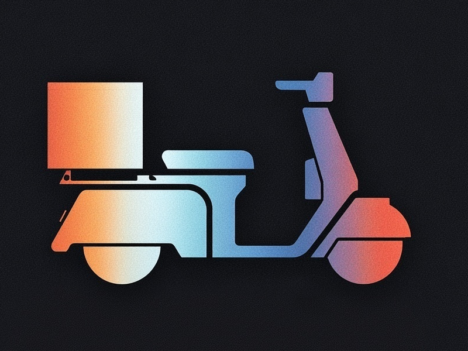

SideCar is a full agentic coding assistant — not a chatbot wrapper. It reads your files, runs your tests, and ships the fix. Nothing touches a server unless you want it to.

SideCar runs an autonomous loop — closer to Claude Code or Cursor than anything else in the VS Code ecosystem. It decides what to read, what to change, runs tests, and iterates. Use local Ollama models, the Anthropic API, or any OpenAI-compatible server.
Multi-step reasoning with real tool use. SideCar reads the files that matter, writes targeted diffs, runs your test suite, reads the output, and fixes what broke — all in one uninterrupted pass. Cycle detection prevents runaway loops.
AST-based extraction for JS/TS, Python, Rust, Go, and Java/Kotlin. Sends relevant functions, not entire files.
Built-in secrets detection and vulnerability patterns. Scans staged files before every commit.
Extend with Model Context Protocol servers — databases, APIs, browser automation, and more.
Stage, commit, push, branch, and stash through natural language. Commit messages auto-generated.
The only free, local
VS Code extension
with a full
agent loop.
Tested against Continue,
Llama Coder, Twinny,
Copilot Free & Pro,
and Claude Code.
| Capability | SideCar | Continue | Llama Coder | Twinny | Copilot Free | Copilot Pro | Claude Code |
|---|---|---|---|---|---|---|---|
| Chat with local models | ✓ | ✓ | — | ✓ | ✓ | — | — |
| Inline completions | ✓ | ✓ | ✓ | ✓ | ✓ | ✓ | — |
| Autonomous agent loop | ✓ | — | — | — | — | ✓ | ✓ |
| File read / write / edit | ✓ | — | — | — | — | ✓ | ✓ |
| Run commands & tests | ✓ | — | — | — | — | ✓ | ✓ |
| Security & secrets scanning | ✓ | — | — | — | — | — | — |
| MCP server support | ✓ | — | — | — | — | ✓ | ✓ |
| Hooks & scheduled tasks | ✓ | — | — | — | — | — | ✓ |
| Git integration | ✓ | — | — | — | — | ✓ | ✓ |
| Diff preview & rollback | ✓ | — | — | — | — | ✓ | ✓ |
| Diagram generation | ✓ | — | — | — | — | ✓ | — |
| OpenAI-compatible API | ✓ | ✓ | — | — | — | — | — |
| Fully offline | ✓ | ✓ | ✓ | ✓ | — | — | — |
| Free & open source | ✓ | ✓ | ✓ | ✓ | Freemium | $10+/mo | API costs |
Download from ollama.com — the local model runtime SideCar uses by default. Make sure it's in your PATH.
Search sidecar-ai in the VS Code Extensions panel, or install directly from the Marketplace.
Click the SideCar icon in the activity bar. The extension launches Ollama automatically on first run.
Describe what you want done. SideCar will read the relevant files, write the code, and test it — no hand-holding required.
Installed and in PATH. Runs your local language models.
Any current release. VS Code Insiders also works.
Use Claude models via API key. Prompt caching for lower cost.
LM Studio, vLLM, Groq, OpenRouter — point SideCar at any compatible API.
MIT License. Independent project by
Nicholas Donatelli. Tips appreciated
but never required.